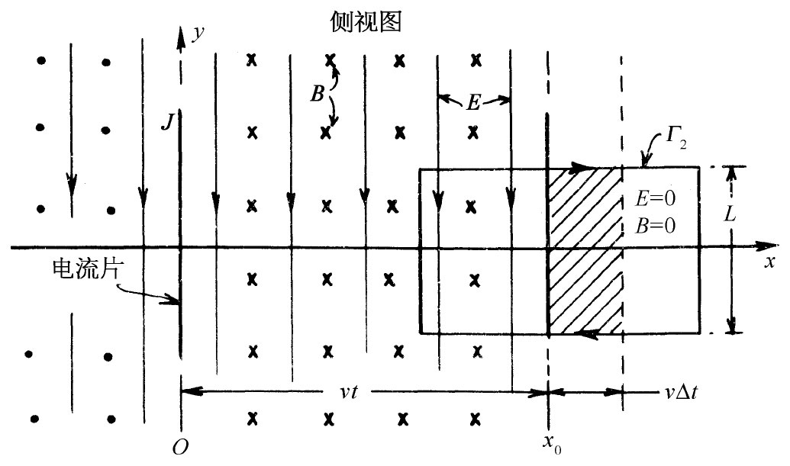

现在就来谈谈一些新的结果。它们是由于将所有的麦克斯韦方程集合在一起而产生的。首先，让我们看看在一个我们选定为特别简单的情况下会发生什么。假定所有的量都仅在一个坐标内变化，我们的问题就变成一个一维问题了。这样的情况如图18-3所示。我们具有置于yz平面上的一片电荷。该片电荷起初是静止的，然后瞬息得到一个平行于y轴的速度v，并保持以这一恒定速度运动。你也许会为有这种“无限大”的加速度而担心，但实际上并不要紧，只要想象该速度很快就提高到v。因此，我们突然就有一个面电流J（J是在z方向的单位宽度中的电流）。为了保持问题简单，我们假定还有一片静止的异号电荷叠加在yz平面上，使得不会发生任何静电效应。并且，虽然在图上我们仅仅表明，在一个有限区域里所发生的情况，但应该想象该片电荷伸展至±y和±z的无限远处。换句话说，我们有这么一种情况，即原本没有电流，但突然有了一个均匀的面电流。这样将发生什么呢？
图18-3 一个无限大电荷片突然平行于其本身运动。这样就会有磁场和电场以一恒速率从该片传播出去
噢！当沿正y方向上有一片电流时，如我们所知，在x＞0的地方就会产生一个沿负z方向的磁场，而在x＜0的区域磁场则沿相反方向。我们可以通过应用磁场的线积分将等于电流除以∈0 c2 这一事实来求出B的大小。这样，就会得到B=J/（2∈0 c2 ）（因为在一宽度为w的长片上，电流I就是Jw，而B的线积分则为2Bw）。
这向我们提供了在该片附近——即对于小x处——的磁场，但由于我们所设想的乃是一个无限大的片，因而也会期望这同样的论证应当给出在较大x值即在较远处的磁场。可是，这就意味着，接通电流的瞬间，磁场突然处处从零变到一个有限值。但请等一下！如果磁场突然改变，也会产生巨大的电效应（只要 它在改变，就有电的效应）。由于移动了该电荷片，因此，我们造成一个变化的磁场，因而电场也一定被产生。如果有电场产生，则它们必定从零开始而变化至某一个量值。这样就将有个∂E/∂t，与电流J一起将对磁场的产生做出贡献。因此，通过存在大量交相混合的各个方程求解时，我们不得不力图同时求解所有的场。
如果仅仅考察麦克斯韦方程组，还不容易直接看出如何去求得解答。因此，我们将首先向你们说明答案是什么，然后才证实它的确满足那些方程。答案是这样的：上面我们所算出的场B，实际上的确是在该电流片右面附近（即对于小x值）产生的。结果一定是这样，因为如果环绕该片做一个小回路，则不会有地方可供任何电通量穿过。但是在较远——x较大——处的B场起初为零，它保持了片刻为零，然后便突然增大。总之，我们一开通电流，磁场立即靠紧在它的地方跃升至一恒定值B，然后这个B的跃升又从源区再度扩展出去。经历了某一段时间后，在某一x值之内就将处处有一个均匀强磁场，在更远的地方则都等于零。由于对称的缘故，它会朝着正的和负的两个x方向扩展出去。
E场也与此一样。在t=0（当我们开通电流时）之前，场处处为零。然后在经历了时间t之后，E和B两者在扩展到x=vt的范围内都是均匀的，而再往外则均为零。这些场像潮汐波一样向前扩展，其波前以一匀速前进，这速度最终将弄清楚是c，但暂时我们却只叫它作v。关于E或B的大小与x的关系曲线，在t时刻的表现如图18-4（a）所示。再回顾一下图18-3，在t时刻，在x=±vt的区域内都“充满”着场，但这些场却还未到达更远的地方。这里要再次强调，我们是在假定该电流片以及由此产生的场E和B，都是在y和z方向上伸展至无限远的（我们不能够画出一张无限大的片，因而图中所示的只是在一个有限大范围内所发生的事情）。
图18-4 （a）在电荷片已经运动之后，在t时刻作为x函数的B（或E）的大小；（b）在t=T时才将一电荷片朝着负y方向移动后的场；（c）（a）与（b）之和
现在，我们要对所发生的情况做定量分析。为此，就要考察两个截面图，一个是沿y轴向下的俯视图，如图18-5所示；另一个则是沿z轴往回望的侧视图，如图18-6所示。我们从该侧视图开始，就会见到该电荷片正在向上移动，在+x各处磁场都指向书内；而在-x各处磁场则指向读者，电场处处向下——一直伸展至x=±vt处。
|  | |
| 图18-5 图18-3的俯视图 | 图18-6 图18-3的侧视图 |
让我们看看这些场是否符合麦克斯韦方程组。首先，画出一条供计算线积分用的回路，比如说图18-6中所示的那个矩形Γ2 。你会注意到，这矩形的一边落在有场的区域，但另一边却落在场还没有到达的地方。有一些磁通量穿过这一回路。如果这通量正在变化着，则环绕该回路应有电动势。如果波前正在前进，就会有一个变化着的磁通量，因为B所存在的区域正在以速度v逐渐扩大。在Γ2 内的通量等于B乘以存在磁场的那一部分面积。由于B的大小恒定，所以通量的变化率就等于B的量值乘以面积的变化率。要获得面积的变化率挺容易。若该矩形的宽度为L，则其中有B存在的面积在时间Δt内将改变LvΔt（见图18-6）。于是通量的变化率便是BLv。按照法拉第定律，这应等于E环绕Γ2 的线积分，而那恰好就是EL。于是我们就有方程：
E=vB. （18.10）
因此，若E对B的比率为v，则我们所假设的这些场都将满足法拉第方程。
但那不是唯一的方程，我们还有联系着E和B的另一个方程：
为了应用这个方程，我们考察图18-5那个俯视图。我们已经知道，这一方程将提供靠近该电流片的B值。并且，对于任何画在该片之外但在波前之后的回路，就不会有B的旋度，也不会有任何j或变化的E，因而方程式（18.11）在那里是正确的。现在让我们来看看对于如图18-5所示的那条与波前相交的回路Γ1 发生什么事情。这里并没有电流，因而方程式（18.11）可以——用积分形式——写成
B的线积分恰好就是B乘以L。E通量的变化率仅仅是由前进的波前引起的。在Γ1 内E不为零的面积正在以vL的速率增大，于是式（18.12）的右边就是vLE，所以该方程式变成
c2 B=Ev. （18.13）
我们有这么一个解：即在波前后面B和E都是恒量，它们各与波前行进的方向垂直而且彼此之间也互相垂直。麦克斯韦方程组规定了E对B的比值。根据式（18.10）和（18.13），得
可是请等一等！我们已求得关于比值E/B的两个不同 的条件。刚才描述的这种场能否确实存在呢？当然，要使这两个式都正确，只能有一个速度v，也即v=c，波前一定要以速度c前进。这样我们就有了一个例子，其中来自电流的电效应以某个有限速度c传播。
现在试问，如果在经历了一段短时间T之后，突然把电荷片的运动停止下来，会发生什么情况呢？应用叠加原理我们能够看出将发生什么事情。我们有过电流原来为零，然后才突然开通的情况，并且已知道了那种情况的解。现在我们打算加上另一组场，即取另一片电荷，并仅在开通了第一个电流后的时刻T，在相反的方向以相同的速率突然使它开始移动。这两者相加起来的总电流起初为零，然后接通了一段时间T，之后又再中断——因为两电流恰好互相抵消，于是我们有一个电流的矩形“脉冲”。
这一新的负电流产生了与正电流相同的场，只是所有的符号都相反，当然都延迟了时间T。波前再次以速度c传播出去，在t时刻它已到达了x=±c（t-T）的远处，如图18-4（b）所示。因此，就有两“块”场以速率c向外推进，正如图18-4的（a）和（b）两部分所示。至于联合场则如图18-4（c）所示，在x＞ct处场为零，在x=c（t-T）与x=ct之间场为恒量（具有我们上面所求得的值），而在x＜c（t-T）处场又是零。
总之，我们有一小块场——厚度为cT的一块——离开了该电流片而独自穿越空间传播。场已经“起飞”了，它们正在自由地穿越空间传播着，不再与源有任何方式的联系。毛虫已变成了蝴蝶！
这组电磁场如何能维持它本身呢？答案是：依靠法拉第定律▽×E=-∂B/∂t和麦克斯韦新项c2 ▽×B=∂E/∂t的联合效应。它们不得不维持其本身的存在。假定磁场已在消失，那就会有一个变化着的磁场，而这变化着磁场会产生一个电场。如果这个电场试图消逝，则这变化着的电场将再度产生磁场。因此，通过不断的相互影响——通过由一个场到另一个场的前后快速变换——它们必定会永远继续下去，而绝不会消逝 [1] ，它们以一种舞蹈方式——一个围着另一个，第二个又围着第一个转——把它们自己维系在一起，穿越空间而向前传播。